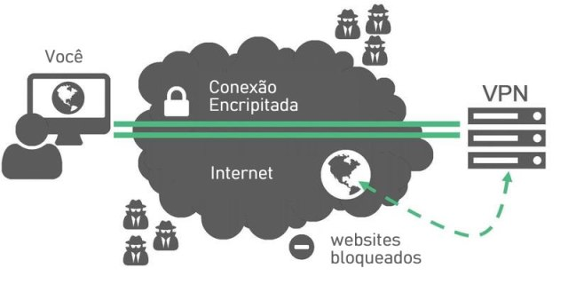

O uso de uma VPN (Rede Privada Virtual) tem se tornado muito comum entre os usuários. Mas isso nem sempre foi assim. Há pouco tempo atrás, apenas empresas corporativas usavam esse tipo de rede privada. Atualmente, existem muitos meios para usar redes mais seguras. Uma delas é o aplicativo Tor. Mas, na maioria dos casos, é mais recomendado usar uma VPN. Porque VPN e não Tor? Descubra a resposta aqui.
Redes VPN são redes separadas das redes públicas. Além disso, na maioria das vezes, o tráfego de dados de usuários que usam VPN passam por túneis privados. Nesse tipo de conexão os dados são altamente criptografados, e trafegam, como já citado, por redes separadas (túneis privados), chegando ao destinatário de modo seguro. Não podemos afirmar que as redes VPNs são totalmente seguras. No entanto, como mostrado nesse parágrafo, os dados são protegidos, e as informações dos clientes são criptografadas.
O uso de uma VPN pode ser de extrema necessidade para quem usa redes públicas em aeroportos, restaurantes, praças, shoppings e outros lugares. Nesses ambientes, usar uma VPN pode proteger seu aparelho de acesso não autorizado, ou mesmo, não deixar suas informações à deriva.
As vantagens de usar um VPN são inúmeras. Uma delas, por exemplo, é poder ver conteúdo bloqueado por localização geográfica. Com a VPN ativada, você poderá ver conteúdo da Netflix dos EUA, assim como acessar a Play Store americana, caso tenha instalado em seu dispositivo mobile.
Mas quando você usa uma VPN, você poderá acessar qualquer conteúdo disponível. Isso inclui os melhores serviços de Streaming e conteúdos censurados por outros governos. Além disso, você também terá uma cota ilimitada para fazer download de alguns servidores que bloqueiam os usuários, muitas vezes cancelando seus downloads.
POSTS MAIS POPULARES
CATEGORIA MAIS POPULARES
SOBRE NOS
SIGA NOS
© Todos os direitos reservados
Feito por Jonathas de Jesus